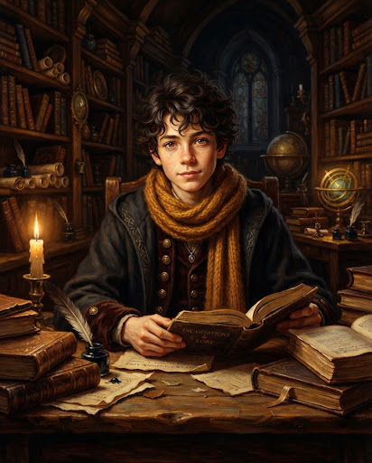
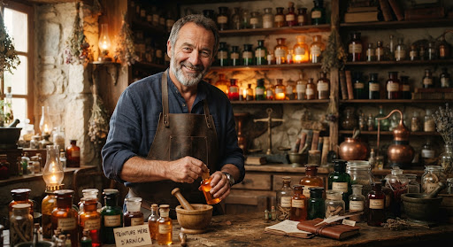

Hugo Granger-Valombre
Certificat de Vol sur Balai
ConformeSession 2024-2025 • Validé le 12 Septembre
Ordonnance & Tisanes de Sommeil
ActifApothicaire du Chemin de Traverse • Renouvelable
Autorisation Sortie Forêt
ScelléSceau parental apposé • Expire en Juin 2025
Consultation Apothicaire E. Flamel
Mercredi 20 Nov. à 16h30
Tournoi de Vol & Parcours Aérien
Samedi 23 Nov. à 10h00
Préparer le sac de cours d'arithmancie
＋10 orÀ faire avant ce soir • Règle et parchemins vierges
Arroser les mandragores de la serre
ValidéTerminé à l'aube • Inspecté avec soin par Léa
Réviser le traité des créatures féeriques
＋15 orÉchéance : Vendredi prochain • Chapitres IV & V
Professeur Alistair Vance
Tuteur académique • Académie des Arcanes
Hibou régulier • Bureau Nord

Apothicaire Barnabé
Herboriste familial • Officine Centrale
Disponible les mercredis
« Adore le chocolat chaud à la cannelle avant les devoirs d'arithmancie. Sensible aux courants d'air froids d'automne — veiller à la cape doublée de laine de loup des neiges. »
« Robe de cérémonie taille 14 ans. Balai Comète 260 révisé et équilibré à la Toussaint par le maître forgeron. »
Aucune allergie ni contre-indication
Ce grimoire médical est encore immaculé. Vous pouvez y consigner élixirs proscrits, morsures d'animaux ou soins réguliers.